DeepSeek-Prover-V1.5：利用证明助手反馈进行强化学习与蒙特卡洛树搜索
论文发布日期
作者： Huajian Xin、Z.Z. Ren、Junxiao Song、Zhihong Shao、Wanjia Zhao、Haocheng Wang、Bo Liu、Liyue Zhang、Xuan Lu、Qiushi Du、Wenjun Gao、Qihao Zhu、Dejian Yang、Zhibin Gou、Z.F. Wu、Fuli Luo、Chong Ruan
机构： DeepSeek-AI
项目地址： https://github.com/deepseek-ai/DeepSeek-Prover-V1.5
摘要
我们提出 DeepSeek-Prover-V1.5，一个面向 Lean 4 定理证明的开源语言模型。它通过优化训练与推理过程，在 DeepSeek-Prover-V1 基础上进一步增强。模型以 DeepSeekMath-Base 为起点，在形式数学语言上进行专门预训练；随后使用由 DeepSeek-Prover-V1 数据改进而来的形式定理证明数据集执行监督微调；最后通过证明助手反馈强化学习进一步优化。除 DeepSeek-Prover-V1 所采用的单遍完整证明生成外，我们还提出 RMaxTS：一种蒙特卡洛树搜索变体，使用内在奖励驱动的探索策略生成多样化证明路径。DeepSeek-Prover-V1.5 相比 V1 显著提升，在高中水平 miniF2F 测试集上达到 63.5%，在本科水平 ProofNet 上达到 25.3%，均刷新当时最先进结果。
图 1 比较多个模型在 Lean 4 形式定理证明基准上的通过率，包括高中水平 miniF2F 测试集与本科水平 ProofNet；DeepSeek-Prover-V1.5 同时给出预训练版和微调版结果。
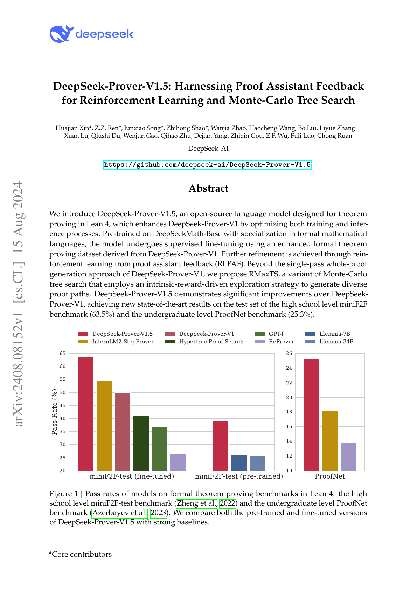
1 引言
大语言模型的最新进展深刻影响了人工智能中的数学推理与定理证明。尽管自然语言领域已经取得显著进步，语言模型面对使用 Lean、Isabelle 等系统的形式定理证明时仍有重大困难，因为这类任务要求给出满足验证系统形式规范的严谨推导。即使 GPT-4 等先进模型也难以处理复杂形式证明，说明其中的编程与数学都高度复杂。形式定理证明模型不仅要理解 Lean 等形式系统的语法和语义，还必须把抽象数学推理与精确的形式表示对齐。
形式定理证明语言模型通常采用两类策略：证明步骤生成与完整证明生成。证明步骤生成预测下一条策略，并交给形式验证器检查，以获得当前策略状态的更新信息；这类方法通常利用树搜索构造有效证明。完整证明生成则依据定理陈述一次产生全部证明代码，计算效率更高，并且协调证明模型与形式定理验证器所需的通信预算更少。
DeepSeek-Prover-V1 已通过完整证明生成在 Lean 4 上取得当时最先进结果，但这种范式也有独特挑战。它需要在无法读取中间策略状态的情况下进行长程序列预测，而后续策略又依赖这些隐藏结果。在 Lean 的策略模式中，证明由一连串不断转换证明状态的策略构成。这种顺序结构会产生误差累积风险：一次误解就可能使生成过程显著偏离有效证明路径。更具体地说，自回归模型在生成长证明时，可能对中间策略状态形成错误判断。
为了在保留完整证明生成的简单性与计算效率的同时，无缝引入证明步骤生成所利用的中间策略状态，我们在 DeepSeek-Prover-V1.5 中开发了一种统一方法，通过“截断并续写”机制结合两者优势。流程从标准完整证明生成开始：语言模型在定理陈述前缀之后补全证明代码，再由 Lean 证明器验证。如果证明正确且完整，流程结束；如果发现错误，就在第一条错误消息处截断代码并丢弃后续内容，再把已经成功生成的证明代码用作提示，继续生成下一段证明。
为提高新补全部分的准确性，我们把 Lean 4 证明器返回的最新状态作为注释附加在提示末尾。该方法并不限于从最后一条成功应用的策略恢复；我们把“截断并续写”机制集成到蒙特卡洛树搜索中，由树搜索策略安排截断点。此外，针对证明搜索中的奖励稀疏问题，我们提出一种新的无外部奖励探索算法，为树搜索智能体赋予内在动机，也就是好奇心，使其广泛探索策略状态空间。这些算法模块把完整证明生成模型扩展为灵活的交互式定理证明工具，能够有效利用证明助手反馈并生成多样化候选解。
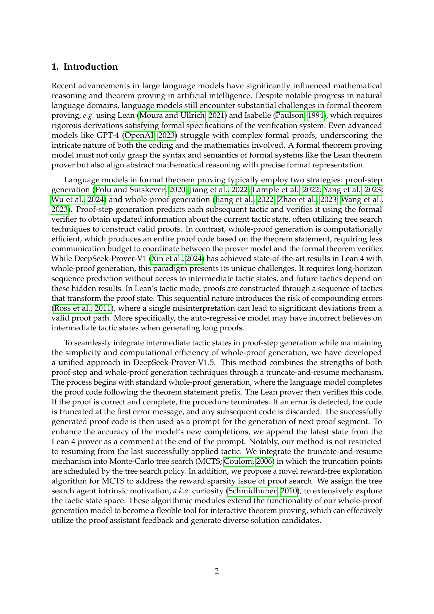
图 2 展示整体框架。DeepSeek-Prover-V1.5 依次经历预训练、监督微调和强化学习。监督微调时，预训练模型接收一段以策略状态注释关键词结尾的不完整定理证明；模型既要预测该策略状态的内容作为辅助目标，也要补全后续证明步骤作为主要目标。强化学习时，给定不完整证明与 Lean 证明器提供的真实策略状态，微调模型展开生成多个候选证明，再由 Lean 验证。验证结果作为二元奖励进一步优化模型，使其更符合验证系统的形式规范。推理阶段提供两种选择：单遍采样和蒙特卡洛树搜索。
1.1 贡献
我们给出一个基于语言模型的形式数学证明器完整开发框架，集成大规模数学预训练、形式数学语料构建与扩充、从证明助手反馈进行在线强化学习，以及用于定理证明长期规划的树搜索方法。预训练模型、监督微调模型、强化学习模型和蒙特卡洛树搜索算法代码均已公开，供进一步研究与应用。
- 预训练。 在高质量数学与代码数据上继续预训练基础模型，尤其关注 Lean、Isabelle、Metamath 等形式语言，以增强形式定理证明与数学推理能力。
- 监督微调。 通过两种数据扩充技术改进 Lean 4 代码补全数据集。第一种使用 DeepSeek-Coder V2 236B 在 Lean 4 代码旁标注自然语言思维链注释，使形式定理证明与自然语言推理对齐。
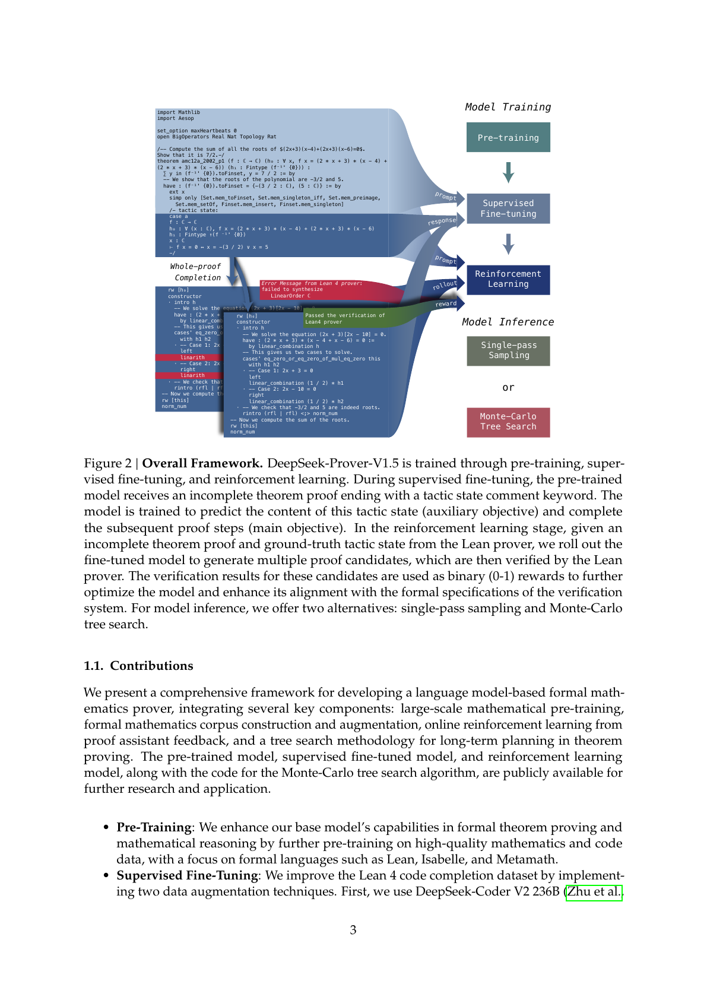
第二种在 Lean 4 证明代码中插入中间策略状态信息，使模型能够有效利用编译器反馈。随后用所得数据集微调预训练模型。
- 强化学习。 对监督微调模型使用 GRPO 算法，通过证明助手反馈执行强化学习。Lean 证明器的验证结果提供奖励监督，使模型更加符合验证系统的形式规范。
- 蒙特卡洛树搜索。 我们引入一种新抽象及相应搜索算法，推进形式定理证明中的树搜索方法。“截断并续写”机制充当状态—动作抽象，把树搜索无缝集成到完整证明生成框架。RMaxTS 是一种新的蒙特卡洛树搜索算法，它利用 RMax 策略处理稀疏奖励证明搜索中的探索困难。算法通过分配内在奖励，鼓励证明智能体生成多样化规划路径，从而广泛探索证明空间。
1.2 评测与指标概览
- miniF2F。 在单遍完整证明生成设置下，DeepSeek-Prover-V1.5 在 miniF2F 测试集上的通过率为 60.2%，比 DeepSeek-Prover-V1 的 50.0% 绝对提高 10.2 个百分点；加入树搜索后，通过率进一步达到新的最先进结果 63.5%。
- ProofNet。 在单遍完整证明生成设置下，DeepSeek-Prover-V1.5 在 ProofNet 验证集和测试集上分别达到 21.6% 与 23.7%；加入树搜索后进一步提升到 25.4% 和 25.3%，同样刷新当时最先进结果。
2 模型训练
2.1 预训练
为了提高语言模型生成形式证明以及通过数学语言推理的能力，我们继续预训练基础模型。所用高质量数据同时包含代码和自然语言数学内容，尤其关注 Lean、Isabelle、Metamath 等证明助手常用的形式语言。改进后的模型称为 DeepSeek-Prover-V1.5-Base。
2.2 监督微调
本节介绍 DeepSeek-Prover-V1.5 的监督微调方法和流程。具体而言，我们为 DeepSeek-Prover-V1 的证明数据集加入详细解释注释，以改善自然语言描述与 Lean 4 代码之间的对齐，进而促进更好的形式数学推理。此外，把中间策略状态作为辅助预测任务加入，以支持蒙特卡洛树搜索中的截断并续写机制。所得模型称为 DeepSeek-Prover-V1.5-SFT。
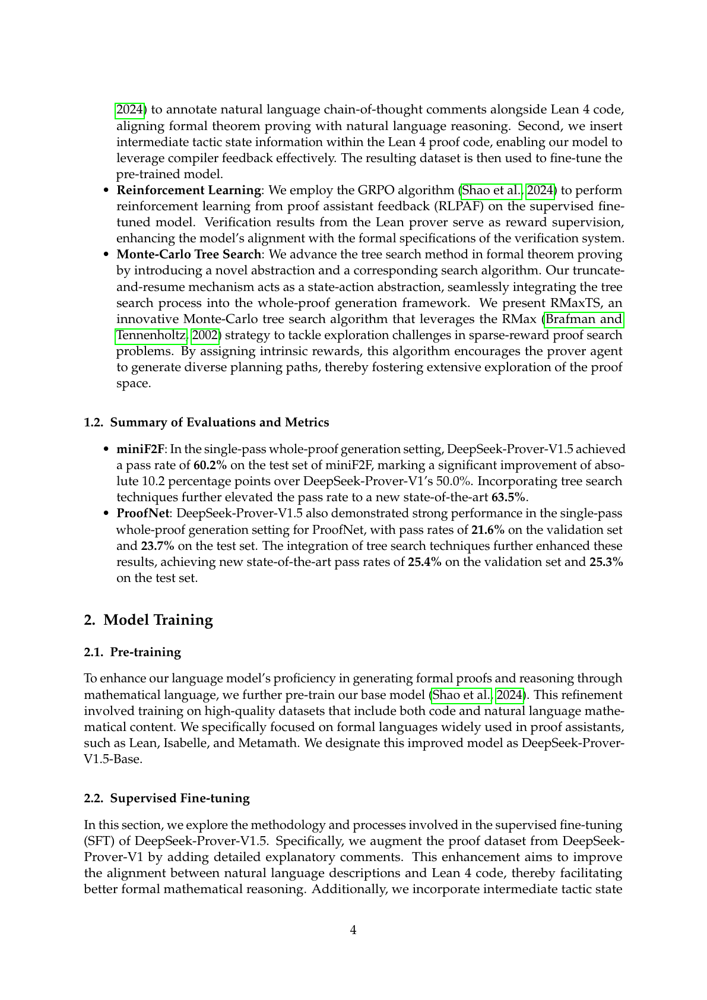
数据整理。 我们为监督微调开发了一个完整的 Lean 4 代码补全数据集，其中含有从大量形式定理得到的合成证明代码。定理来源包括标准 Lean 4 数学库 Mathlib4、DeepSeek-Prover-V1 和 Lean Workbook 的合成定理，以及 miniF2F 与 ProofNet 基准的验证集。
为扩充形式证明数据，我们采用专家迭代：先让语言模型生成证明，再验证生成的证明数据，用验证通过的数据重新训练模型，随后用优化后的模型继续产生更多证明数据。每轮迭代之间，使用 DeepSeek-Coder V2 236B 把证明代码前的思考过程标注为注释。最后，再针对蒙特卡洛树搜索的截断并续写机制调整这些数据。最终证明数据集包含 964.5 万条序列。
思维增强证明生成。 DeepSeek-Prover-V1 暴露出自然语言解题策略与 Lean 定理证明之间的显著差距。在自然语言中，模型会生成细致推导步骤来构造证明；在 Lean 中，却经常依赖一串高层策略调用以暴力方式求解。高层策略虽然有效，却隐藏了内部工作过程和结果，使模型难以通过结构化数学推理解决复杂证明目标。
为解决这一问题，我们在生成定理证明代码之前加入自然语言推理。Lean-STaR 会在每个证明步骤前独立执行思维链推理；本文方法则把这种推理直接作为注释嵌入证明代码。我们使用 DeepSeek-Coder V2 236B 以两种方式增强 DeepSeek-Prover-V1 的现有数据：第一，在证明块开头插入完整自然语言解答；第二，在对应 Lean 策略之前交替插入具体自然语言步骤。
使用这种格式训练，会要求模型在证明块开头提出完整数学推理，并在每条策略之前作出详细步骤规划。模型由此发展出新的行为，能以细致数学思考指导策略生成。训练数据使用两种不同引导提示，区分思维链模式与非思维链模式的证明代码补全；两种模式的输入输出示例见附录 A。
使用策略状态信息扩充提示。 为实现蒙特卡洛树搜索的截断并续写机制，需要从模型生成代码中提取策略信息。我们使用 LeanDojo 项目的数据提取工具增强 Lean REPL，从而以三元组形式提取每条策略的位置以及应用前后的策略状态。该信息帮助识别触发验证错误的具体策略代码，并用于树搜索扩展步骤。
对每个有效形式证明中的每条策略，我们把验证器返回的策略状态作为注释插入。训练时，以“策略状态”注释关键词开头的全部后续词元作为回答，计算监督微调损失；注释之前的词元作为提示，不参与训练损失计算。
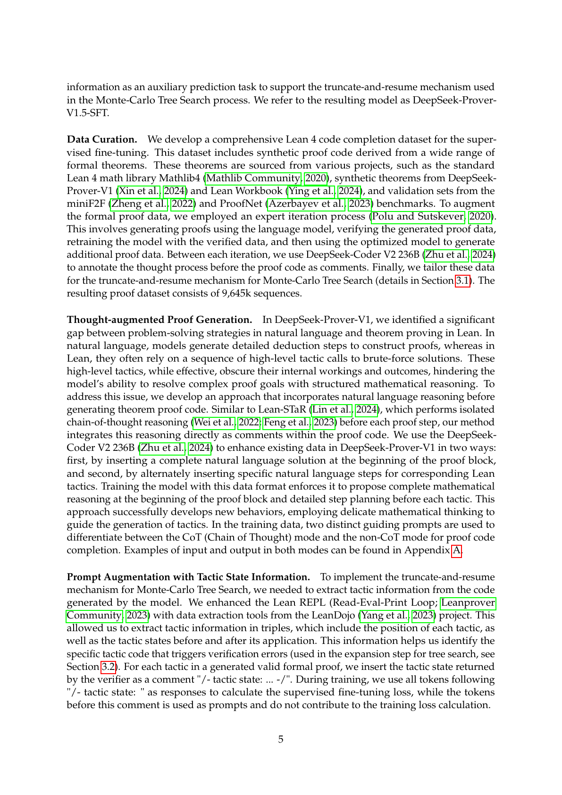
训练设置。 监督微调从预训练模型开始，共训练 90 亿词元，批大小为 2048，恒定学习率为 $10^{-4}$。训练先执行 100 步预热，以稳定学习动态。训练样本随机拼接为序列，最大上下文长度为 4096 个词元。
2.3 基于证明助手反馈的强化学习
强化学习已被证明能够增强监督微调语言模型的数学推理能力。为进一步改进 DeepSeek-Prover-V1.5-SFT，我们加入强化学习阶段，并得到 DeepSeek-Prover-V1.5-RL。该阶段利用 Lean 4 证明器的验证反馈提高性能。
提示。 强化学习阶段从监督微调数据集中选取一部分定理陈述作为训练提示。我们选择 DeepSeek-Prover-V1.5-SFT 在多次尝试中具有中等正确证明生成成功率的定理，使模型既有提升空间，又能收到正向反馈。过滤后保留约 4500 个唯一的定理陈述。每个定理同时添加思维链与非思维链引导提示，以增强模型在两种模式下的证明生成能力。
奖励。 通常使用训练后的奖励模型为 LLM 强化学习提供反馈；形式定理证明则有一项显著优势：证明助手能够严谨验证生成证明。每个生成证明若验证正确就获得 1 分，否则为 0。二元奖励准确，却很稀疏，特别是对监督微调模型难以处理的定理。为缓解稀疏性，我们按前述方法选择具有挑战但仍可解决的训练提示。
强化学习算法。 我们采用组相对策略优化。它相较 PPO 更有效、更高效，主要原因是不需要额外训练评论家模型。GRPO 为每个定理提示采样一组候选证明，再依据组内输出的相对奖励优化模型。提示选择策略使候选中很可能同时包含正确与错误证明，与 GRPO 的组相对性质高度契合，从而改善训练过程。
训练设置。 强化学习以 SFT 模型为起点；同一模型同时作为初始模型和参考模型，用于施加 KL 散度惩罚。恒定学习率为 $5\times10^{-6}$，KL 惩罚系数为 0.02。每个定理采样 32 个候选证明，最大长度 2048，训练批大小为 512。
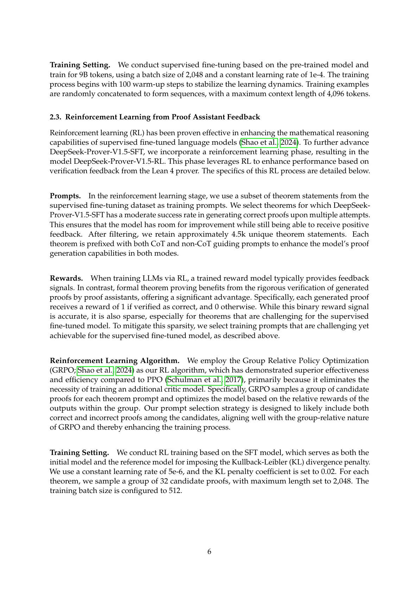
图 3 比较不同训练阶段的模型能力。“思维链”和“非思维链”表示使用两种不同引导提示；阴影区域表示均值周围的标准差范围，$\mu\pm\sigma$ 分别表示平均准确率和标准差。RL 模型在 miniF2F 与 ProofNet 上均优于基础模型和 SFT 模型，思维链设置整体最好。
2.4 评测
基准。 我们在以下基准上评估定理证明性能，以比较各训练阶段的模型能力：
- miniF2F。 聚焦高中练习与竞赛中的形式解题能力，包括 AMC、AIME 和 IMO，重点覆盖代数与数论。基准包含 244 道验证题和 244 道测试题，最初用 Lean 3 编写，本文依据公开版本人工转换为 Lean 4.9.0。
- ProofNet。 评估本科数学水平的形式定理证明能力。它含 185 道验证题和 186 道测试题，取自广泛使用的本科教材，覆盖实分析、复分析、线性代数、抽象代数和拓扑。题目最初同样使用 Lean 3 编写，本文人工转换为 Lean 4.9.0。
提示配置。 DeepSeek-Prover-V1.5-Base 每次证明尝试都会从验证集独立采样三个证明示范，构造少样本提示。miniF2F 使用人工编写证明；ProofNet 使用 DeepSeek-Prover-V1.5-RL 生成且验证正确的证明。DeepSeek-Prover-V1.5-SFT 与 RL 使用两种引导提示：一种鼓励在每个证明步骤前进行思维链推理，另一种不鼓励；详细示例见附录 A。
指标。 定理证明性能使用 $\operatorname{pass@}K$ 准确率衡量，即模型在 $K$ 次尝试内生成正确证明的成功率。每个模型部署在单块 A100 40GB GPU 上，通过 vLLM 生成样本。采样温度为 1，top-p 为 0.95，最大词元数为 2048。生成证明由 Lean 4 验证；验证时导入 Mathlib4 和 Aesop，以使用预定义前提与策略，并设 300 秒时间限制。
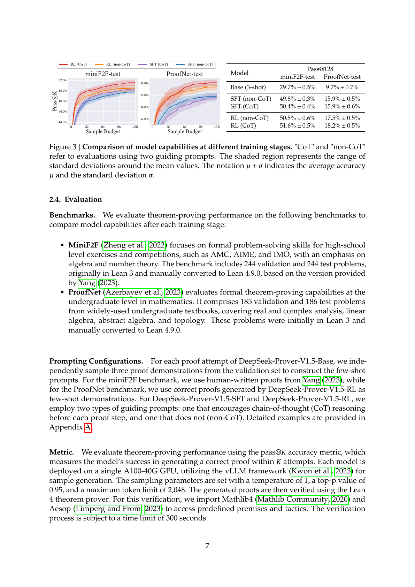
训练阶段比较。 图 3 比较每个训练阶段在 miniF2F 与 ProofNet 上的表现。基础模型 DeepSeek-Prover-V1.5-Base 使用三样本提示，已能解决 miniF2F 测试集接近三分之一的问题。监督微调得到的 DeepSeek-Prover-V1.5-SFT 显著超过基础模型：miniF2F 的 $\operatorname{pass@128}$ 约提高三分之二，ProofNet 则翻倍。后续强化学习进一步提升模型在所有 $K$ 值上的 $\operatorname{pass@}K$。
这与 DeepSeekMath 等自然语言数学研究中的发现不同：那些工作里，强化学习主要把本已位于前 $K$ 候选中的正确回答推到更靠前位置；本文观察到的却是形式定理证明基础能力的真实增强。提升不仅在小样本预算下出现，而且随着样本预算增加仍保持稳定。第 4.2 节使用更大样本预算的蒙特卡洛树搜索实验进一步支持这一结论。
思维链与非思维链比较。 我们比较 DeepSeek-Prover-V1.5-SFT 和 RL 在非思维链与思维链生成模式下的表现。图 3 显示，思维链模式在多数设置中持续优于非思维链。依靠这些增强的定理证明模式，DeepSeek-Prover-V1.5-RL 在两个基准上都取得更好结果：miniF2F 平均准确率 51.6%，ProofNet 为 18.2%。在思维链模式中集成自然语言推理，显著改善了形式证明书写的规划与执行。附录 A 给出使用与不使用自然语言思维链时的证明策略详细对比。
3 面向探索的蒙特卡洛树搜索
3.1 策略级树抽象
为了在完整证明生成设置中实现树搜索，我们通过截断并续写机制引入证明树抽象，定义专用状态空间和动作空间。大体遵循既有“思维树”范式，先把不完整证明拆成一串分别对应单个证明步骤的树节点，再利用节点中存储的部分内容继续生成证明。图 4 展示如何从完整证明生成构造证明搜索树。
截断：把证明拆成树节点。 证明搜索树构建在策略级，每条树边表示一次策略状态转移。首先把模型生成的完整证明交给 Lean 证明器解析为策略；然后在最早验证错误处截断，确保此前全部策略代码都能成功应用，并使证明向目标定理推进。策略代码被切分成若干代码片段，每个片段包含一条有效策略及其相关思维链注释，对应表示一次策略状态转移的树边。通过该抽象，每段策略代码被转换成一系列树节点，形成从根节点到某个特定节点的路径。
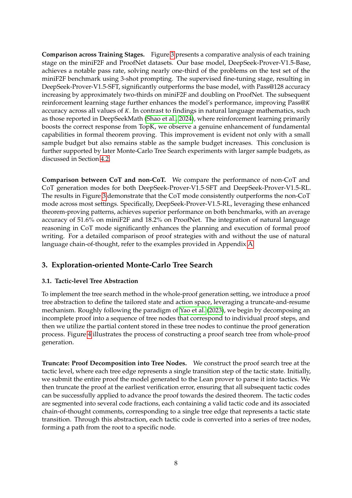
图 4 详细展示蒙特卡洛树搜索扩展步骤中的截断并续写机制：
- 选定节点后，回溯它对应的不完整证明代码前缀，其中含文件头、初始陈述以及祖先节点中已成功应用的策略。
- 语言模型依据该前缀和包含当前策略状态的注释块，生成后续证明。
- 合并前缀与新代码后交给 Lean 4 验证。若无错误，树搜索终止；若有错误，就在第一条错误消息处截断新代码、丢弃后续代码，并把成功部分解析为策略。
- 每条策略都作为新节点加入搜索树，在所选节点下扩展出一串后代。
- 树更新完成后，下一轮扩展选择另一个候选节点；候选不限于叶节点。如此反复，直到找到正确证明或耗尽样本预算。
续写：从树节点生成证明。 在 Lean 4 中，不同策略可能导向同一策略状态，因此证明树中的每个节点都可能对应多段产生相同结果的策略代码。为处理这一情况，每个节点存储一组等价策略代码。树搜索智能体扩展节点时，随机选择其中一条策略用于构造语言模型提示。提示包含以所选策略结束的不完整证明代码，以及 Lean 证明器返回、以注释块表示的策略状态。第 2.2 节的微调模型已经学会识别并利用这种格式，能够让附有策略状态注释的不完整代码引导后续证明生成。
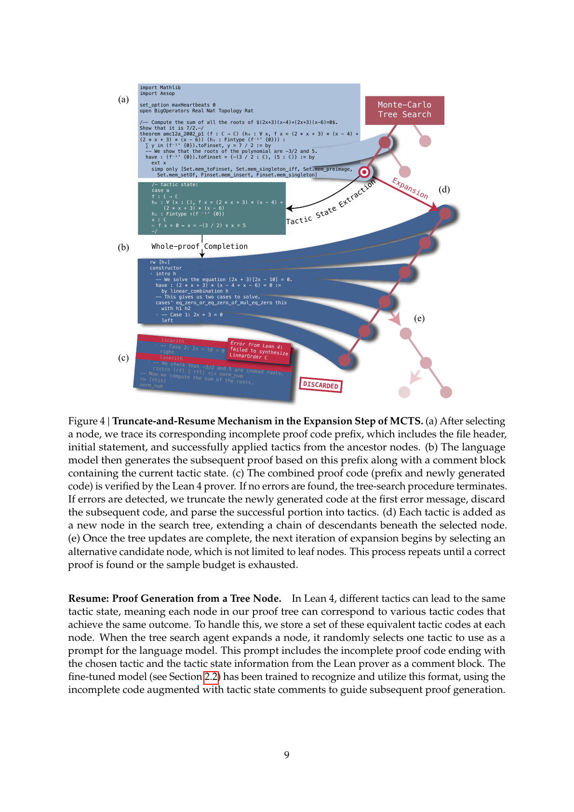
3.2 通过蒙特卡洛树搜索进行交互式定理证明
证明搜索树采用标准蒙特卡洛树搜索范式，迭代执行选择、扩展、模拟和反向传播四个步骤。由于完整证明生成模型在扩展节点时本身就会执行一次展开，我们把模拟并入扩展。算法工作流如下。
选择。 选择步骤也称树策略，从根节点向下遍历，寻找值得扩展的节点，目标是在探索与利用之间取得平衡。对树节点 $s$，从有效操作集合中选取使价值最大的动作。动作 $a$ 可以是移动到 $s$ 的一个子节点，也可以是用特殊动作 $\varnothing$ 扩展当前节点。
这种方法使用“虚拟节点”技术：为每个节点分配一个虚构子节点，表示选择当前节点本身进行扩展。由于动作空间由生成模型支持，而生成输出范围无法由固定分支数确定，这使树搜索智能体能够持续扩展非叶节点。
在节点 $s$ 上执行动作 $a$ 的价值估计 $Q_{\mathrm{UCB}}(s,a)$ 由两部分组成：$Q(s,a)$ 是依据选择历史得到的动作价值样本估计，作为利用项，从既有尝试中找回高价值候选；$\mathrm{UCB}(s,a)$ 是上置信界计算的探索奖励，随着状态—动作对被反复执行而减小。因此，$Q_{\mathrm{UCB}}(s,a)$ 是 $Q(s,a)$ 的乐观估计，并能以高概率充当其上界。节点价值与 UCB 奖励的具体设置见第 3.3 节，完整公式见原页。
扩展。 接下来调用证明生成模型，扩展选择阶段指定的节点。从节点保存的不完整证明代码继续执行完整证明生成，提出一系列后续策略，再把生成证明交给 Lean 验证。这次证明补全尝试等价于标准 MCTS 框架的一次模拟展开。
如果验证结果表明证明完整，搜索即可结束，因为已经找到目标定理的新证明。否则解析验证反馈，并在最早验证错误处截断生成证明；余下的有效策略被转成节点路径并合入搜索树。需要强调的是，本文使用完整证明生成，模型输出是一串策略组成的完整证明，而不只是下一条策略，因此每轮扩展都可能向树中插入整条节点路径。这与竞技游戏中的传统 MCTS 不同，后者通常每次迭代只扩展一层子节点。
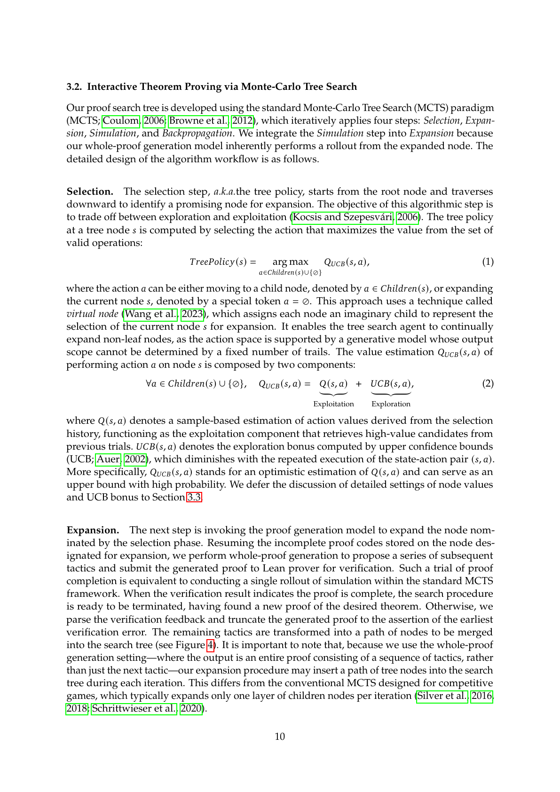
反向传播。 每轮树搜索的最后阶段，会沿根节点到扩展节点的选择轨迹更新价值统计，也就是更新式（1）树策略相关的价值。令 $\tau$ 表示第 $t$ 轮选择轨迹，并以 $s_t$ 为扩展节点；对轨迹中的全部状态—动作对，都把最新轨迹奖励 $R(\tau)$ 纳入 $Q_{\mathrm{UCB}}$ 更新。外在奖励来自编译器反馈：完成证明的轨迹得到 1，未解决的轨迹得到 0。第 3.3 节再引入内在奖励，增强智能体探索动机。
3.3 蒙特卡洛树搜索的内在奖励
形式定理证明搜索的外在奖励极其稀疏：搜索智能体只有完全解决证明时才得到非零奖励。更具体地说，证明搜索形成一棵只有极少数叶节点提供非零奖励的树，符合统计强化学习中著名的困难探索情形。
为促进稀疏奖励序列决策中的探索，一种经典范式是构造内在奖励，让智能体不只优化外在奖励，还主动获取关于交互环境的一般信息。本节提出由内在奖励驱动的探索算法 RMaxTS，即“应用于树搜索的 RMax”，把无外部奖励探索纳入证明搜索。
把 RMax 应用于 MCTS。 我们采用经典 RMax 探索机制构造蒙特卡洛树搜索的内在奖励。其核心是广泛覆盖状态空间：智能体到达未见状态时给自己最大额度的奖励。在证明完成前没有外在奖励的证明搜索中，该流程类似 ZeroRMax，智能体完全由内在奖励驱动，即令 $R(\tau)=R_{\mathrm{intrinsic}}(\tau)$。
一次树扩展的内在奖励由是否有新节点加入搜索树决定：只要至少一个新节点被加入，就记为 1，否则为 0。该策略优先扩展那些会使证明模型生成多样化策略状态的节点。由于多段不同 Lean 代码可能产生相同中间状态转移，这一启发式方法有望减少冗余生成并提高样本效率。
面向非平稳奖励的 UCB。 蒙特卡洛树搜索常用 UCB1 作为探索奖励。论文以选择轨迹集合 $\Gamma(s,a)$ 定义累计奖励 $W(s,a)$ 与访问次数 $N(s,a)$，再组合利用项和探索项，完整式（4）至式（6）见原页。
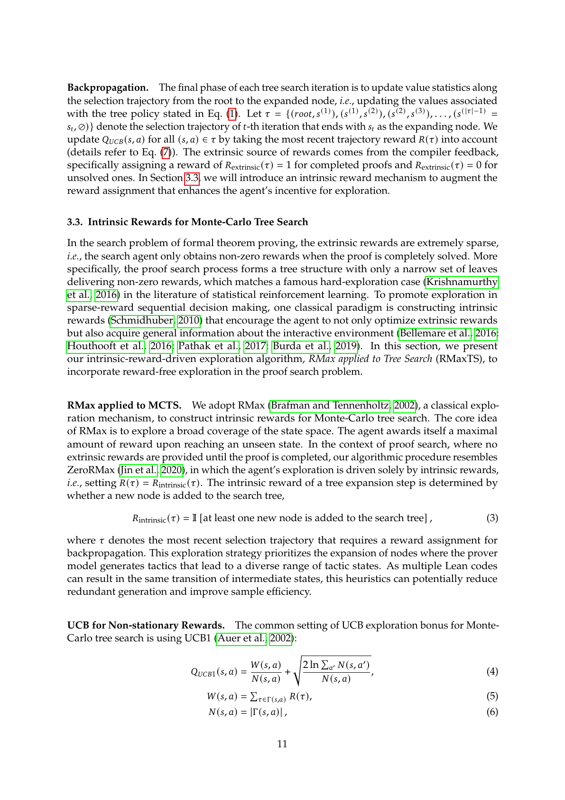
$\Gamma(s,a)$ 表示所有把 $(s,a)$ 作为中间选择步骤的树策略轨迹列表，并按采集时间为轨迹编号，越新的轨迹下标越大。本文提出使用另一种 UCB 变体。式（3）的内在奖励是非平稳信号，其期望会随探索推进而衰减，因为搜索树经过深入探索不断扩展后，再发现含未见策略状态的新节点必然越来越难。
为处理非平稳性，我们采用折扣上置信界，以折扣因子 $\gamma\in(0,1)$ 平滑降低过时反馈记录的权重。新反馈在价值估计中获得更大权重，实践中设 $\gamma=0.99$。这里折扣因子在 DUCB 中的作用不同于无限时域马尔可夫决策过程的价值迭代：折扣施加在树搜索迭代之间，而不是单条轨迹内部的动作步时域上。式（7）至式（9）给出折扣累计奖励、折扣访问量与 DUCB 价值。
3.4 蒙特卡洛树搜索并行化
为提高蒙特卡洛树搜索效率，我们实现数种成熟并行技术。
- 根并行。 每个节点部署 256 个 MCTS 运行器，每块 GPU 使用一个语言模型，证明生成批大小为 512。Lean 证明器通过 REPL 调用，并运行在拥有数千 CPU 核心的集群上；每个证明验证任务由沙箱中单独创建并终止的进程处理。语言模型生成证明和 Lean 验证都异步执行，使 MCTS 运行器能够并发搜索，大幅加快流程。
- 树并行。 每棵搜索树由 32 个线程工作器管理，并行执行树迭代步骤，从而有效调度和平衡证明生成与 Lean 验证。每个线程反复运行搜索循环：选择候选节点扩展、调用语言模型生成证明、用 Lean 验证，再执行反向传播。
- 虚拟损失。 为鼓励并发线程选择不同节点，对进行中的迭代临时分配 $R(\tau)=0$ 的虚拟奖励，先反向传播 0，完成后再更新为真实奖励。这会促进扩展不同节点，提高总体搜索效率。
3.5 与现有方法比较
本节把本文面向完整证明生成、采用新截断并续写机制的证明树搜索，与现有方法比较。当前使用语言模型执行形式数学证明搜索的方法主要分为两类。
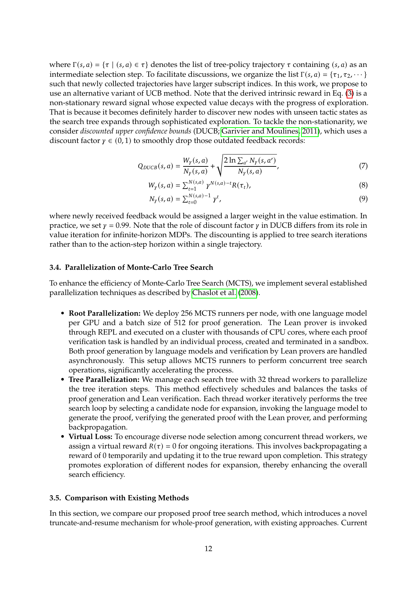
- 多遍证明步骤生成。 把证明过程拆成多轮策略生成与验证，通常遵循树搜索模式。每次生成并验证一条策略，然后为下一条策略重复该过程，直到不再有证明目标。代表方法包括 GPT-f、Thor、ReProver、超树证明搜索和 InternLM2-StepProver。
- 单遍完整证明生成。 一次生成并验证完整证明；如果证明错误，下一次尝试重新生成新证明。代表方法包括 DSP、Subgoal-Prover、LEGO-Prover、Lyra 与 miniCTX。
本文证明树搜索以独特方式连接两种策略，形成新的混合方法。它与单遍方法一样从完整证明生成开始，再通过复杂的截断并续写机制扩展：把生成证明截断到成功的开头部分，将该部分解析为独立策略，并从这里恢复树搜索。这个迭代过程实际实现了蒙特卡洛树搜索，把单遍完整证明生成与多遍证明步骤生成无缝结合。
因此，可以用几乎相同的目标训练一个模型，同时支持两种策略。实验结果表明，这种统一方法在两种设置下都实现更好性能。它结合现有方法优势并引入新技术，为形式数学证明搜索提供更通用、更有效的方案，也可能为该领域未来进展开辟道路。
4 实验结果
本节在两个基准上评估 DeepSeek-Prover-V1.5 的定理证明能力：miniF2F 包含高中练习和竞赛题，ProofNet 包含本科水平定理。我们对完整证明生成与蒙特卡洛树搜索分别报告结果；两者都使用与第 2.4 节相同的训练模型和推理配置，以保证一致性。
4.1 主要结果
我们把 DeepSeek-Prover-V1.5 与此前最先进语言模型比较，突出其性能与进步。
- 通用模型。 GPT-3.5 与 GPT-4 是 OpenAI 开发的先进生成式人工智能模型，在代码生成等多类任务上有效。虽然并非专为定理证明设计，其巨大参数规模仍赋予显著能力。COPRA 是一个上下文学习智能体，利用这些模型提出策略应用，从而评估它们的形式定理证明能力。我们还考察 Llemma；这是一个在大规模通用数学语料上训练的语言模型系列，常被用作形式定理证明基础模型。
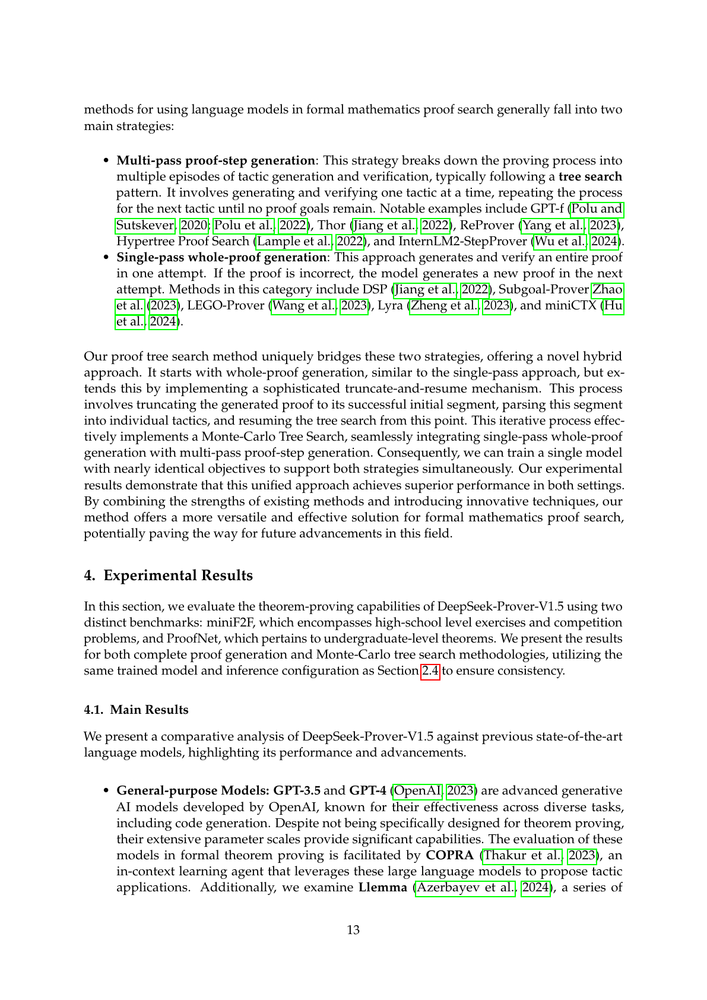
- 形式数学专用模型。 GPT-f 是较早把 Transformer 用于定理证明步骤生成的工作，配合最佳优先搜索构造完整证明。后续方法包括 ReProver、LLMStep 和 Lean-STaR。超树证明搜索探索了在 Lean 形式定理证明中使用蒙特卡洛树搜索；同期的 InternLM2-Math 与 InternLM2-StepProver 也取得优秀表现。
指标。 使用 $\operatorname{pass@}K$ 比较 DeepSeek-Prover-V1.5 与最先进模型，即衡量模型在 $K$ 次尝试内产生正确证明的能力。为对齐不同生成方案的计算预算，样本预算 $K$ 按以下规则展示：
- 单遍采样方法中，$K$ 是生成证明总数；较大的 $K$ 会因式分解，以便与树搜索方法比较。
- 最佳优先搜索方法沿用既有记法 $K=N\times S\times T$，其中 $N$ 是最佳优先搜索尝试次数，$S$ 是每轮扩展生成的策略数，$T$ 是扩展迭代数。
- RMaxTS、超树证明搜索等树搜索方法使用 $K=N\times T$，其中 $N$ 是树搜索尝试次数，$T$ 是树扩展所调用的模型生成次数。
miniF2F 结果。 表 1 比较 miniF2F 测试集上的多种定理证明方法。单遍完整证明生成设置中，DeepSeek-Prover-V1.5-RL 以 60.2% 取得最高通过率，比 DeepSeek-Prover-V1 的 50.0% 高 10.2 个百分点。样本预算限为 128 次时，它证明了 51.6% 的问题，显著超过其他完整证明生成方法，并与领先树搜索方法相当。
树搜索类别中，DeepSeek-Prover-V1.5-RL 与 RMaxTS 组合达到 62.7%，刷新当时最先进结果，并与既有方法拉开明显差距。值得注意的是，DeepSeek-Prover-V1.5-RL 只需 3200 次完整证明生成采样即可达到 54.9%，超过 InternLM2-StepProver 用 $64\times3200$ 次树搜索达到的此前最佳 54.5%。
ProofNet 结果。 表 2 比较 ProofNet 上的各种方法。DeepSeek-Prover-V1.5-RL 在单遍完整证明生成和加入 RMaxTS 后，整个 ProofNet 上分别达到 22.6% 与 25.3%，超过 ReProver 的 13.8% 和 InternLM2-StepProver 的 18.1%。当完整证明生成尝试数限制为 3200 时，DeepSeek-Prover-V1.5 仍证明 21.7% 的定理，比此前最先进 InternLM2-StepProver 高 3.6 个百分点。
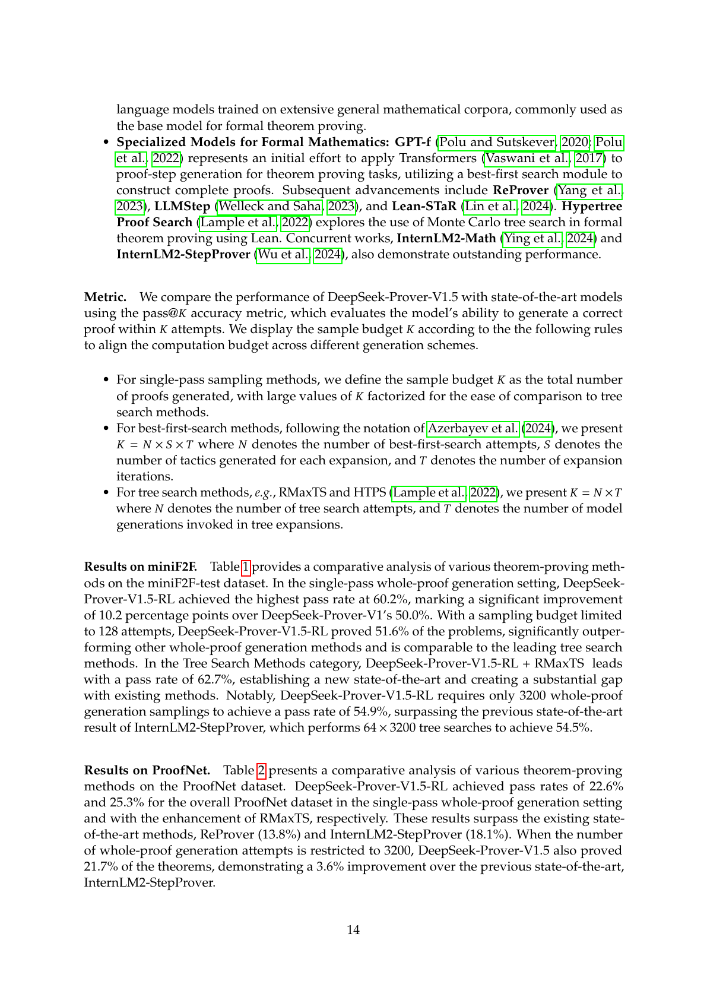
表 1 汇总 miniF2F 测试集完整结果。$\mu\pm\sigma$ 表示平均准确率及标准差。若无另行说明，DeepSeek-Prover-V1.5-Base 使用三样本提示，SFT 与 RL 使用思维链提示；符号 † 表示混合使用两种引导提示。最大预算下，RL 与 RMaxTS 组合从 62.7% 进一步达到 63.5%。
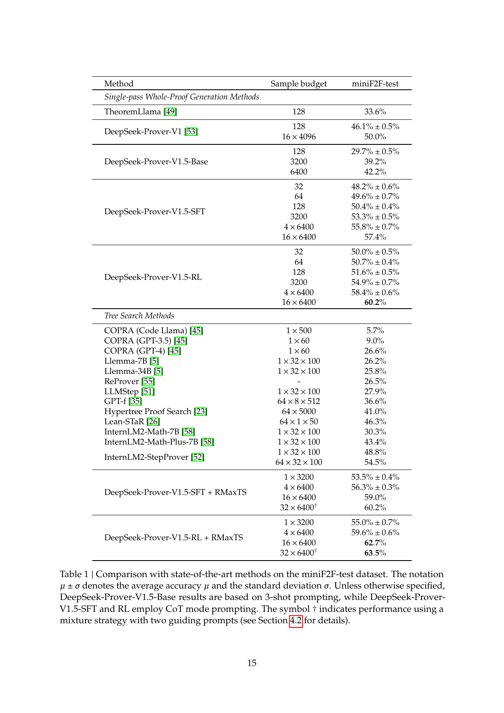
表 2 汇总 ProofNet 验证集、测试集和全集结果。需要注意，ProofNet 验证集曾用于监督微调的专家迭代，因此以 ‡ 标记。RL 与 RMaxTS 在验证、测试和整体上分别达到 25.4%、25.3% 和 25.3%。
4.2 重新审视大规模采样中的训练策略有效性
我们在大规模采样设置下重新考察若干训练模块的作用，同时覆盖单遍完整证明生成和蒙特卡洛树搜索。结果表明，第 2.4 节的观察与发现能够推广到大样本量场景。
强化学习的普遍增强作用。 为支持“来自验证反馈的在线强化学习能够普遍增强模型能力”这一结论，我们使用大样本预算比较最终模型与仅 SFT 版本，结果见表 3 的两列。无论是否采用思维链策略，DeepSeek-Prover-V1.5-RL 在全部生成设置中都持续超过 SFT 模型。
结果还说明，在线强化学习带来的改进与 RMaxTS 的收益彼此正交，二者可以叠加。结合思维链提示与 RMaxTS 后，DeepSeek-Prover-V1.5-RL 在 miniF2F 测试集达到 62.7%，比 SFT 模型明显高 3.7 个百分点，凸显强化学习对提高证明补全模型总体效果的重要作用。
思维链、非思维链与混合策略。 我们比较两种生成模式在 miniF2F 测试集上的表现。表 3 显示，随着样本预算增大，思维链相对于非思维链的优势也扩大。这说明加入自然语言思维链可以使定理证明规划路径更多样，进而产生更广泛的推理策略和更有创意的解法。结果也显示，两种模式在不同问题上具有互补优势。
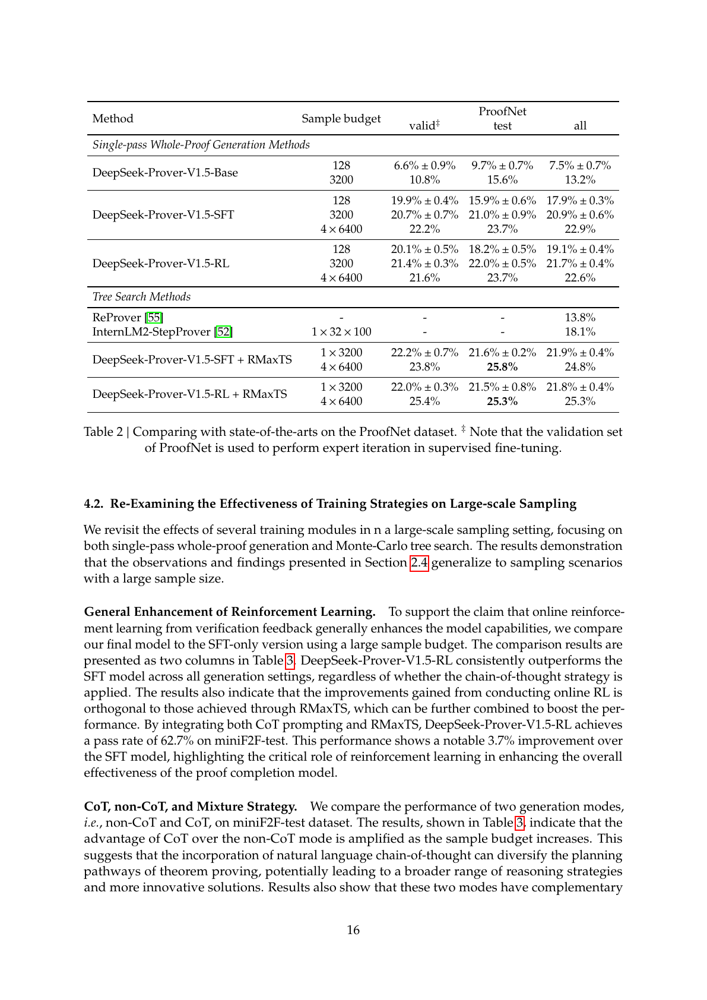
思维链模式的定理证明策略更系统，也会更主动地进行数学思考；非思维链模式则能高效调用 Lean 高层策略，解决 Lean 自动化机制能够处理的计算问题。为同时利用两者，表 3 的“非思维链与思维链”混合策略把一半样本预算分配给思维链模式，剩余一半分配给非思维链模式。仅仅组合两种引导提示，就进一步把 miniF2F 测试集通过率提高到 63.5%。附录 B 给出示例，展示两种生成模式各自的优势。
4.3 RMaxTS 消融研究
内在奖励与折扣 UCB。 我们考察 RMaxTS 的两个核心组件：式（3）的内在奖励，以及式（7）的折扣上置信界。首先构建一个不含内在奖励的标准 UCT 基线，探索完全由 UCB 奖励驱动。由于该基线没有任何非零奖励，不同 UCB 公式实际等价，节点选择只由访问次数决定。
图 5 显示，缺少内在奖励时，UCT 的性能退化到与无搜索方法相近的水平。我们还把 RMaxTS 的折扣 UCB 替换为标准 UCB1，记作“RMaxTS（DUCB 改为 UCB1）”。其表现同样中等，与不含内在奖励的 UCT 接近。这是因为 UCB1 假设样本规模足够大，并通过穷尽探索保证渐近性能；相比之下，折扣 UCB 能加快非平稳内在奖励的价值传播，防止内在奖励的引导被访问次数主导。因此，折扣 UCB 是内在奖励驱动探索不可缺少的补充。
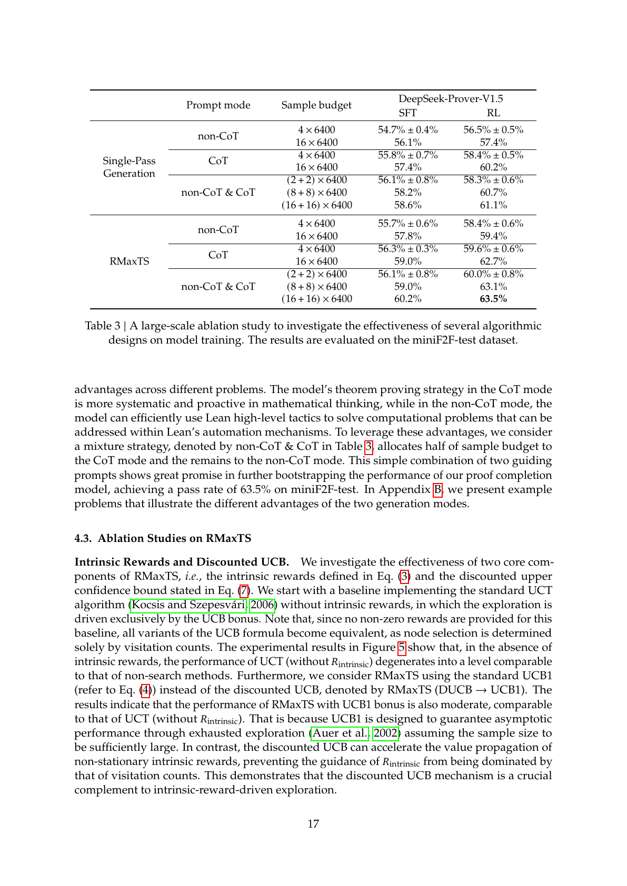
图 5 对 RMaxTS 算法设计进行模块消融，使用思维链模式的 DeepSeek-Prover-V1.5-RL，在 miniF2F 测试集上执行。左图给出 6400 个生成样本内的 $\operatorname{pass@}K$ 曲线，右表给出更大样本量结果。完整 RMaxTS 在两种预算下都取得最佳结果。
策略状态信息的引导。 扩展树节点时，我们把中间策略状态作为注释块拼接到不完整代码后，引导证明补全。借助该辅助信息，模型可以改善对策略状态的内部表示，为长时域规划提供中间指导。
为证明这一优势，我们让 RMaxTS 无法访问策略状态，直接从原始不完整代码执行补全；图 5 将其记为“不使用策略状态的 RMaxTS”。结果表明，缺少策略状态信息时，应用树搜索所带来的增益变得有限，在需要大量样本的困难问题上尤其明显。这说明集成编译器信息是树搜索算法的关键组件，能够提高总体效果和样本效率。
5 结论、局限与未来工作
我们提出 DeepSeek-Prover-V1.5，一个 70 亿参数语言模型，在 Lean 4 形式定理证明上超过所有当时开源模型。模型从 DeepSeek-Prover-V1.5-Base 初始化；该基础模型在面向形式数学推理的专门语料上继续预训练 DeepSeekMath-Base 7B。随后在一个完整的 Lean 4 代码补全数据集上执行监督微调，数据覆盖多个数学领域的大量形式定理；再采用 GRPO，通过在线强化学习增强完整证明生成。
开发 DeepSeek-Prover-V1.5 后，我们提出蒙特卡洛树搜索变体 RMaxTS，以大规模、广泛探索的搜索提高解题能力。这些组件构成一条完整的 LLM 证明助手训练流水线，使 DeepSeek-Prover-V1.5 相比 V1 获得显著提升。
DeepSeek-Prover-V1.5 框架旨在为形式定理证明建立类似 AlphaZero 的流水线。专家迭代和合成数据对应强化学习的核心试错循环，编译器预言机则充当世界模型，提供环境监督。集成树搜索模块已在多个领域证明能有效推动超人性能。
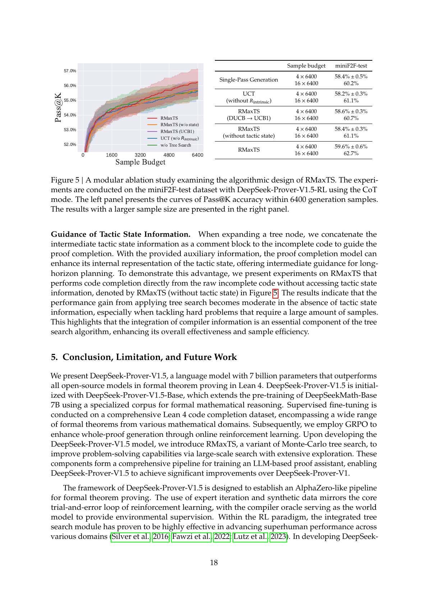
开发 DeepSeek-Prover-V1.5 时，我们聚焦强化学习的探索侧，用 RMaxTS 增加证明步骤生成的多样性；但利用侧，尤其是如何改进证明搜索，仍未得到探索。一个很有前景的方向是训练评论家模型评估不完整证明，并剪除搜索分支。这种部分证明评论家会隐式执行时间信用分配，把证明级反馈拆解为逐步价值差。为长规划路径构建评论家模型并提供引导奖励，是一个重要且困难、值得进一步研究的问题。
最后，近期工作已经从证明单个定理扩展到复杂、多定理 Lean 文件中的真实理论证明。这一变化是完整证明生成方法的自然延伸。观察表明，当前模型已经具备一定的文件级上下文理解能力。未来将重点增强这一方面，以语言模型进步支持前沿 Lean 数学形式化开发者。
参考文献（原文截图）
参考文献的作者姓名、英文题名和出版信息按原论文准确保留。
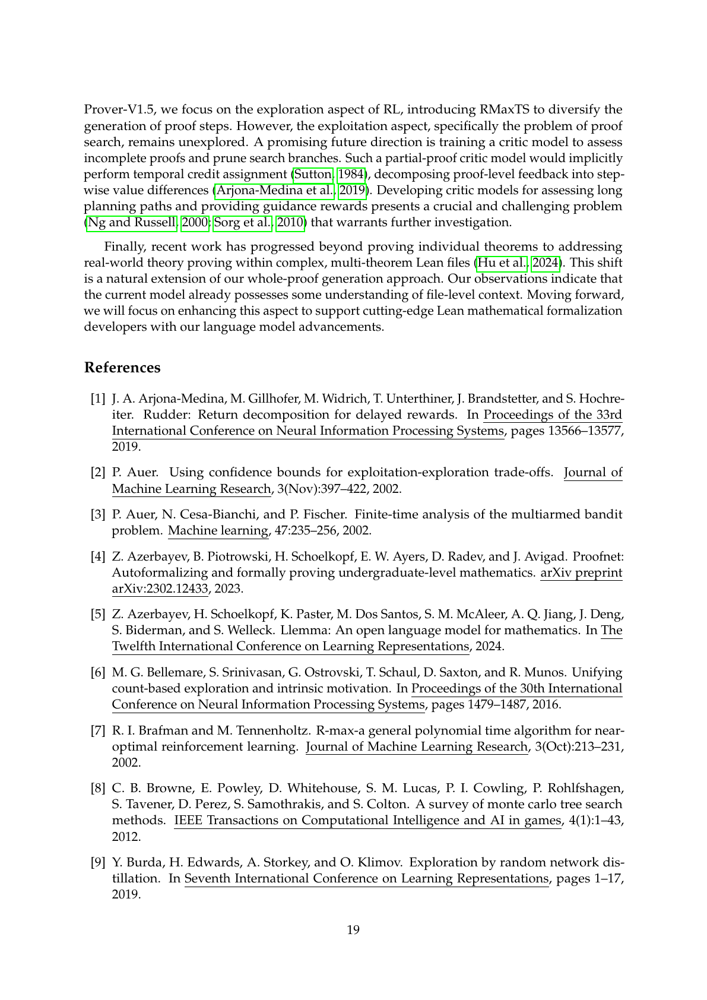
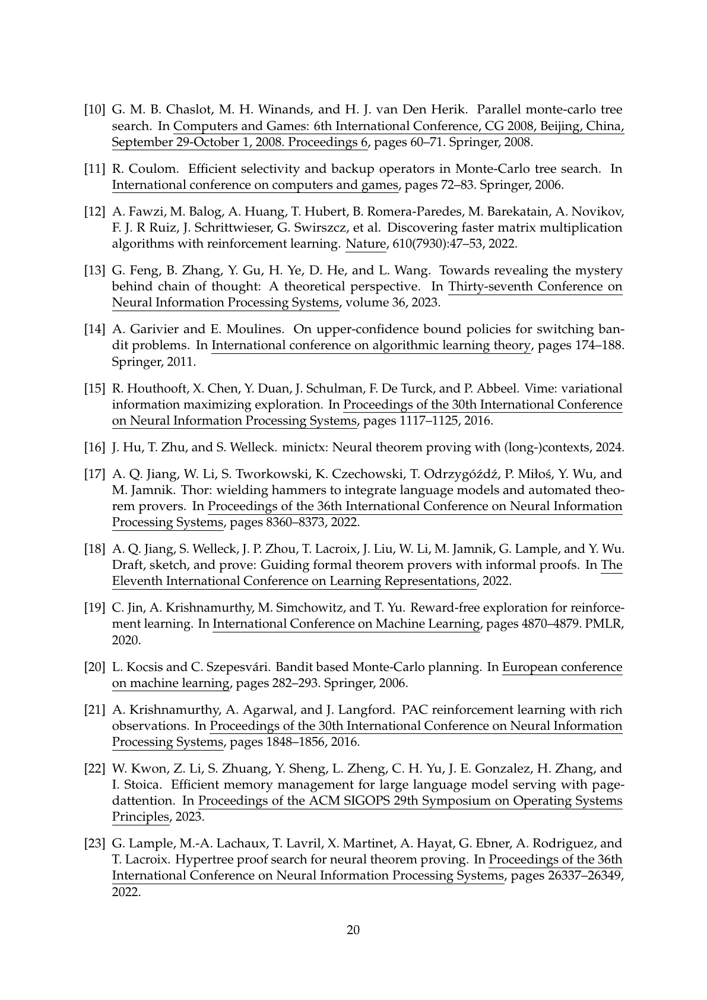
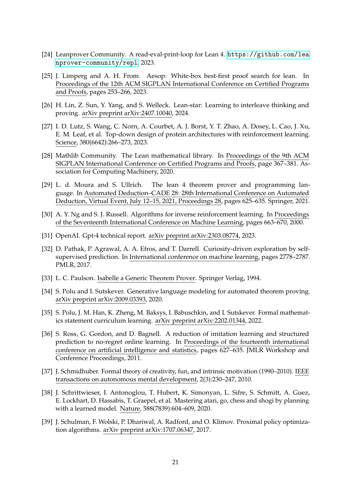
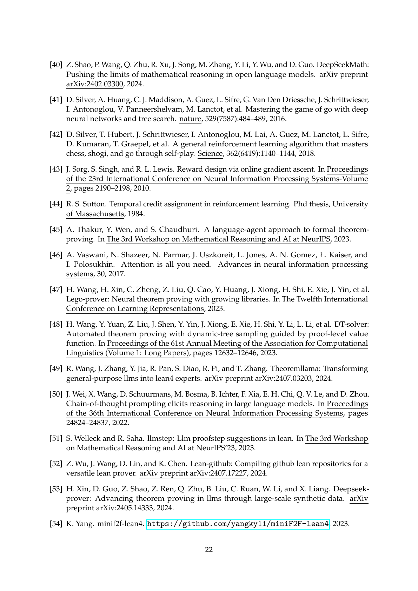
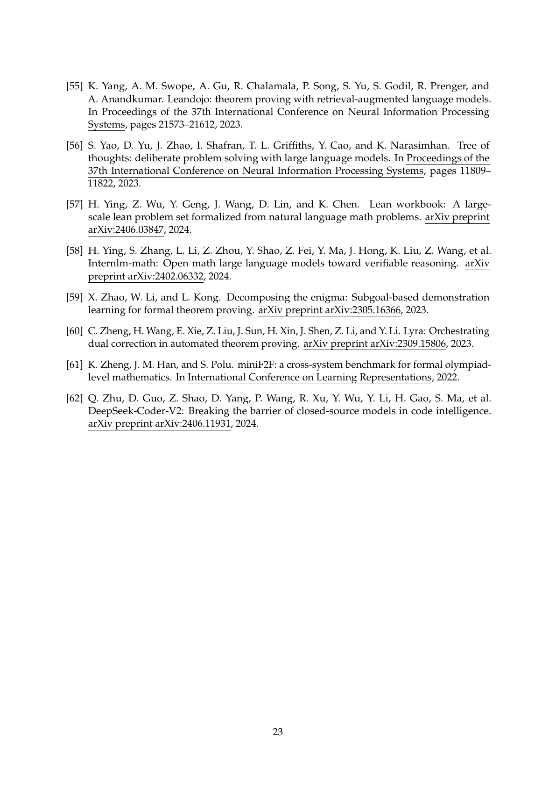
附录 A 非思维链与思维链证明补全提示示例
本节以 miniF2F 中的 aime_1983_p9 为例，展示非思维链提示、思维链提示以及相应生成证明。为清晰呈现，原文使用行内 LaTeX 表达式。第一个例子是在非思维链提示模式下执行完整证明生成：输入要求补全给定 Lean 4 代码，模型直接产生两条简洁策略，先根据给定区间证明分母为正并改写不等式，再利用平方非负性完成证明。完整输入输出保留在原页截图中。
第二个例子使用思维链提示执行完整证明生成。该证明由采用截断并续写机制的蒙特卡洛树搜索找到。模型收到一段正在编写的证明代码作为提示，其末尾带有 Lean 4 证明器返回的中间策略状态注释块；后续代码在该已标注代码前缀引导下生成。
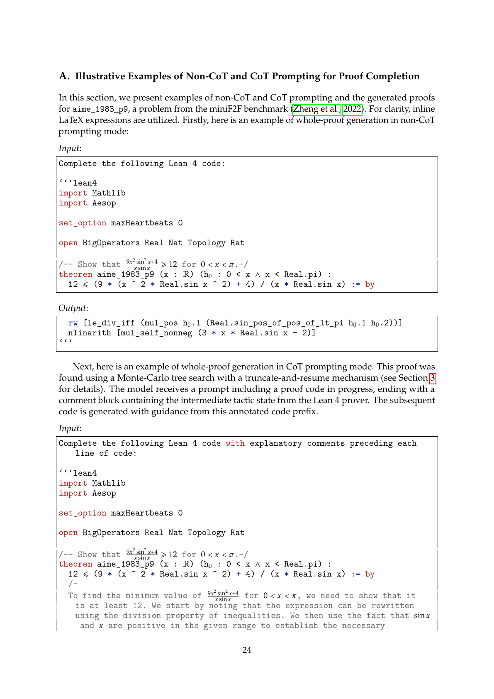
在这个例子中，证明补全模型先从策略状态中提取目标表达式，也就是注释块末行的不等式 $12(x\sin x)\leq 9(x^2\sin^2 x)+4$；然后在思维链中把它整理成 $9x^2\sin^2x-12x\sin x+4\geq0$；最后把左侧改写为平方项，证明其非负并结束证明。
附录 B miniF2F 测试题解答示例
为了说明非思维链提示与思维链提示各自不同且彼此互补的优势，下面分别给出非思维链成功而思维链失败，以及思维链成功而非思维链失败的例子。所有 Lean 代码、数学表达式和代码内注释均按原页截图完整保留。
B.1 非思维链优于思维链的问题
这组例子体现非思维链模式高效使用 Lean 自动化、高层策略和穷举机制解决计算型问题的优势。
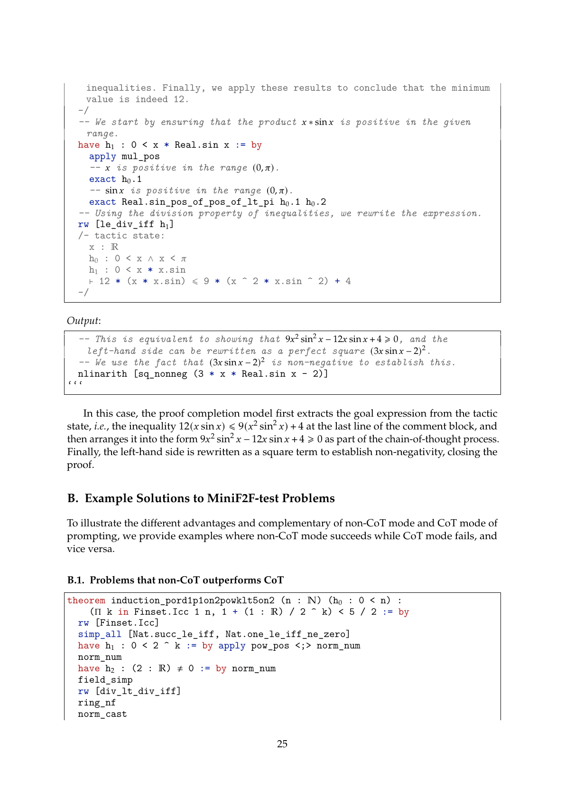
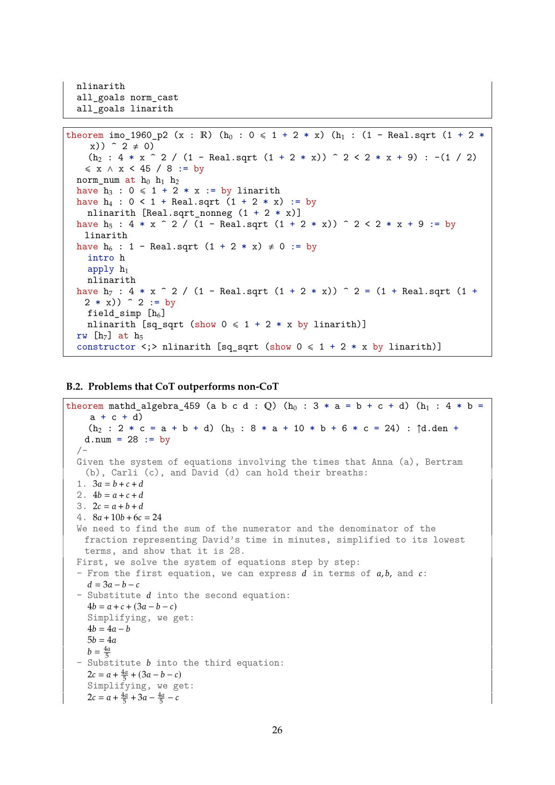
B.2 思维链优于非思维链的问题
这组例子展示思维链模式先建立自然语言数学规划，再用详细中间结论指导 Lean 策略生成的优势。示例分别涉及线性方程组与有理数化简、模 11 的数论不可能性证明，以及有限整数范围内多项式最大值验证。
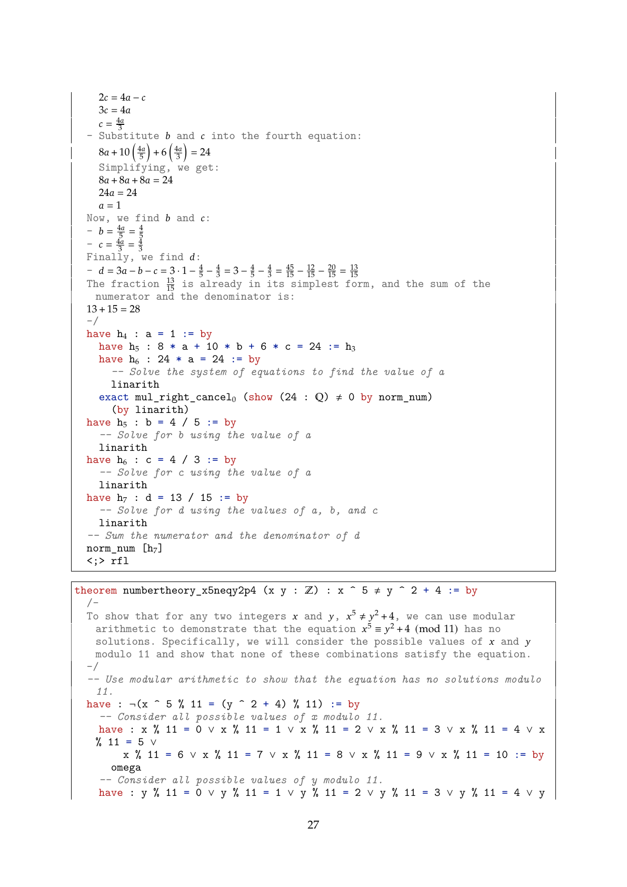
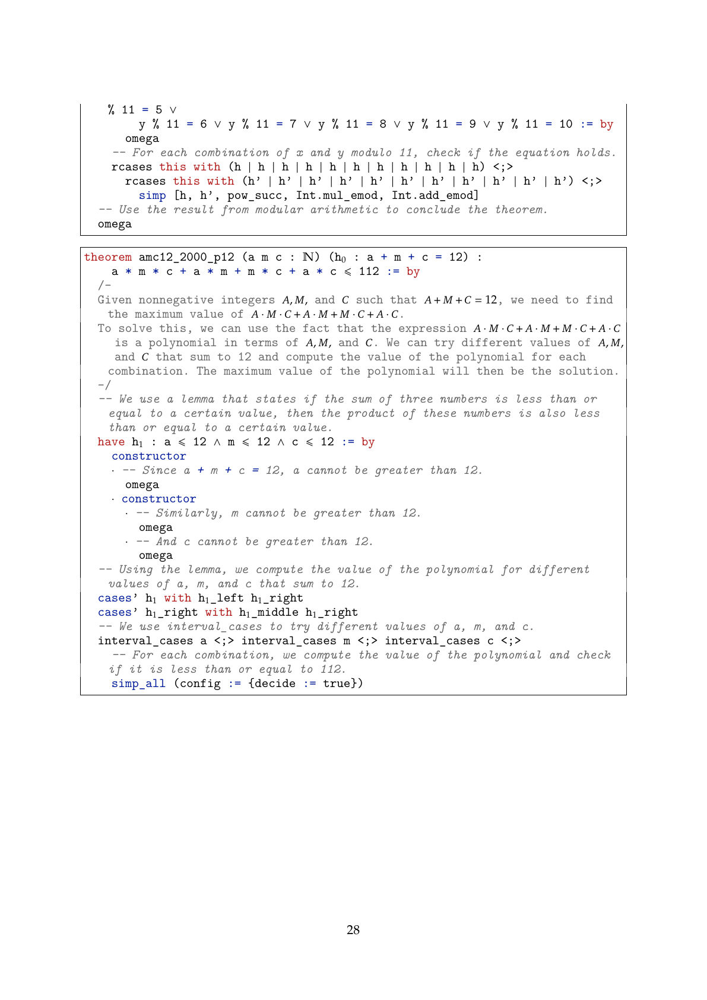